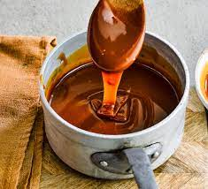

Recipes
Caramel

Description
Made from only 4 simple ingredients, this homemade caramel is salty, sweet, and irresistibly buttery. No candy thermometer required and the possibilities for serving are endless. (Though just a spoon is acceptable!) Use caution as the cooking caramel may splatter. Stand back and wear kitchen gloves if desired. Review recipe notes prior to beginning.
This salted caramel is a reader favorite recipe, marking its spot in the top 10 most popular recipes on my website. It’s sweet, sticky, buttery, and tastes phenomenal on anything it touches. (Though you really only need a spoon to enjoy.)
Ingredients
- 1 cup (200g) granulated sugar (make sure it's labeled “pure cane”)*
- 6 Tablespoons (90g) salted butter, room temperature cut up into 6 pieces
- 1/2 cup (120ml) heavy cream, at room temperature
- 1 teaspoon salt
Steps
- Heat granulated sugar in a medium heavy-duty saucepan (avoid using non-stick) over medium heat, stirring constantly with a high heat resistant rubber spatula or wooden spoon. Sugar will form clumps and eventually melt into a thick brown, amber-colored liquid as you continue to stir. Be careful not to burn it.
- Once sugar is completely melted, immediately stir in the butter until melted and combined. Be careful in this step because the caramel will bubble rapidly when the butter is added. If you notice the butter separating or if the sugar clumps up, remove from heat and vigorously whisk to combine it again. (If you’re nervous for splatter, wear kitchen gloves. Keep whisking until it comes back together, even if it takes 3-4 minutes. It will eventually– just keep whisking. Return to heat when it’s combined again.)
- After the butter has melted and combined with the caramelized sugar, stir constantly as you very slowly pour in the heavy cream. Since the heavy cream is colder than the hot caramel, the mixture will rapidly bubble when added. After all the heavy cream has been added, stop stirring and allow to boil for 1 minute. It will rise in the pan as it boils.
- Remove from heat and stir in the salt. Allow to slightly cool down before using. Caramel thickens as it cools.
- Cover tightly and store for up to 1 month in the refrigerator. Caramel solidifies in the refrigerator. Reheat in the microwave or on the stove to desired consistency. See “What is the Texture of This Salted Caramel?” above.